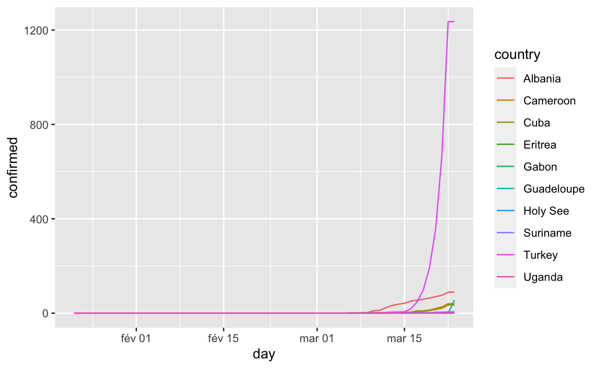
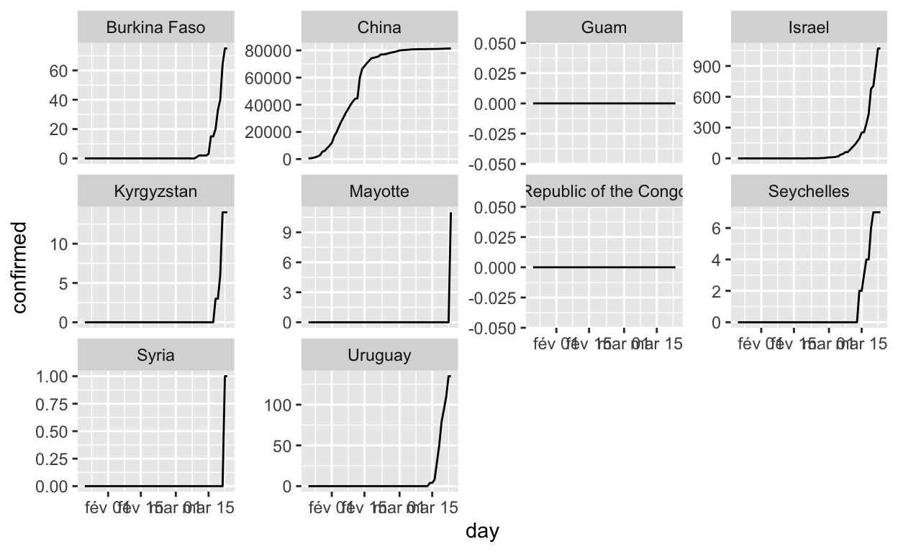
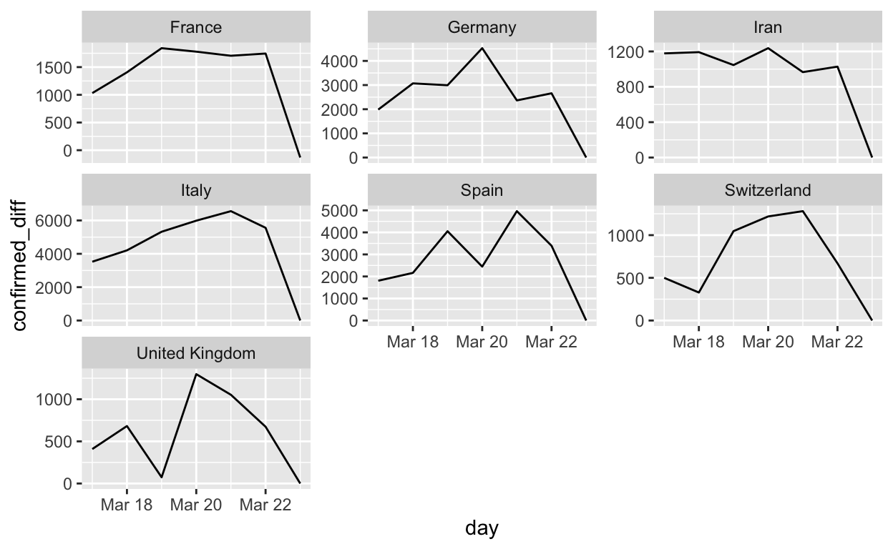
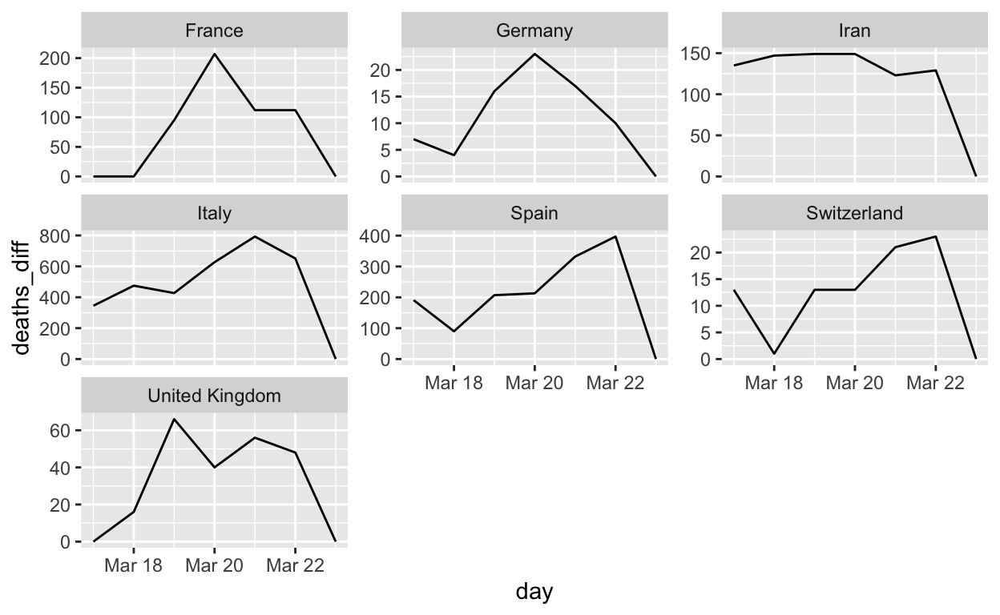
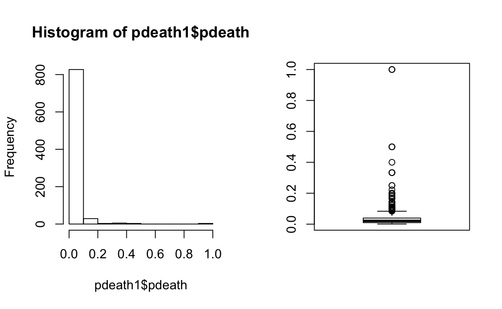
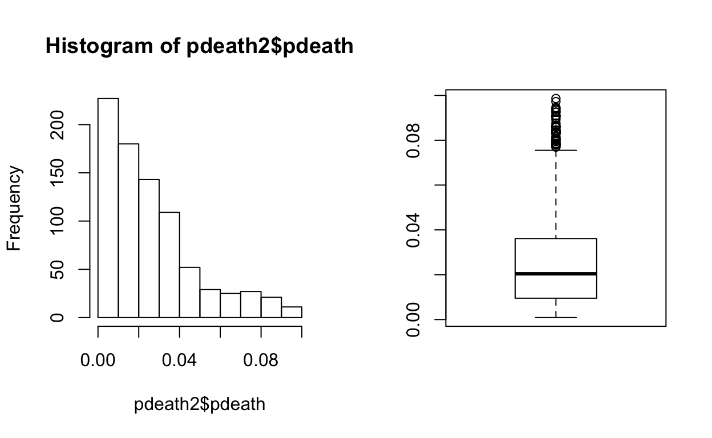
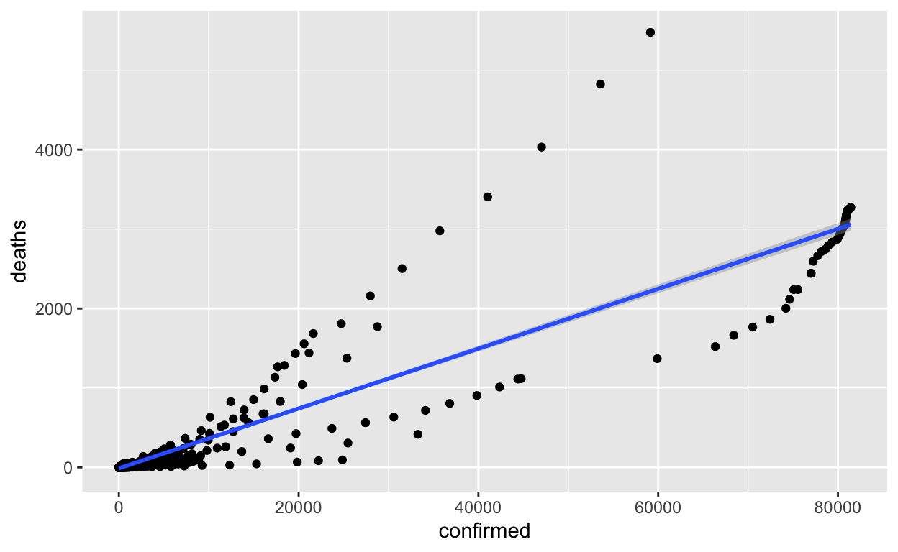
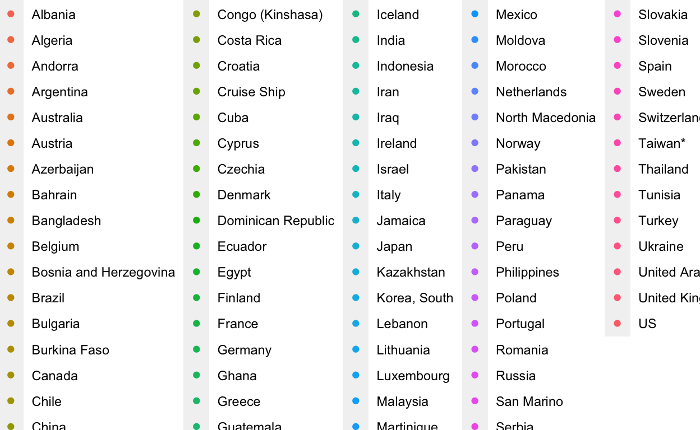

The source code of this file here
Read the new Covid-19 data
library(tidyverse)
library(rmarkdown)
dt_confirmed <- read.csv("https://raw.githubusercontent.com/CSSEGISandData/COVID-19/master/archived_data/archived_time_series/time_series_19-covid-Confirmed_archived_0325.csv", stringsAsFactors = FALSE)
dt_deaths <- read.csv("https://raw.githubusercontent.com/CSSEGISandData/COVID-19/master/archived_data/archived_time_series/time_series_19-covid-Deaths_archived_0325.csv", stringsAsFactors = FALSE)
dt_recovered <- read.csv("https://raw.githubusercontent.com/CSSEGISandData/COVID-19/master/archived_data/archived_time_series/time_series_19-covid-Recovered_archived_0325.csv", stringsAsFactors = FALSE)Check whether the structure is the same
sapply(list(dt_confirmed, dt_deaths, dt_recovered), colnames)
[,1] [,2] [,3]
[1,] "Province.State" "Province.State" "Province.State"
[2,] "Country.Region" "Country.Region" "Country.Region"
[3,] "Lat" "Lat" "Lat"
[4,] "Long" "Long" "Long"
[5,] "X1.22.20" "X1.22.20" "X1.22.20"
[6,] "X1.23.20" "X1.23.20" "X1.23.20"
[7,] "X1.24.20" "X1.24.20" "X1.24.20"
[8,] "X1.25.20" "X1.25.20" "X1.25.20"
[9,] "X1.26.20" "X1.26.20" "X1.26.20"
[10,] "X1.27.20" "X1.27.20" "X1.27.20"
[11,] "X1.28.20" "X1.28.20" "X1.28.20"
[12,] "X1.29.20" "X1.29.20" "X1.29.20"
[13,] "X1.30.20" "X1.30.20" "X1.30.20"
[14,] "X1.31.20" "X1.31.20" "X1.31.20"
[15,] "X2.1.20" "X2.1.20" "X2.1.20"
[16,] "X2.2.20" "X2.2.20" "X2.2.20"
[17,] "X2.3.20" "X2.3.20" "X2.3.20"
[18,] "X2.4.20" "X2.4.20" "X2.4.20"
[19,] "X2.5.20" "X2.5.20" "X2.5.20"
[20,] "X2.6.20" "X2.6.20" "X2.6.20"
[21,] "X2.7.20" "X2.7.20" "X2.7.20"
[22,] "X2.8.20" "X2.8.20" "X2.8.20"
[23,] "X2.9.20" "X2.9.20" "X2.9.20"
[24,] "X2.10.20" "X2.10.20" "X2.10.20"
[25,] "X2.11.20" "X2.11.20" "X2.11.20"
[26,] "X2.12.20" "X2.12.20" "X2.12.20"
[27,] "X2.13.20" "X2.13.20" "X2.13.20"
[28,] "X2.14.20" "X2.14.20" "X2.14.20"
[29,] "X2.15.20" "X2.15.20" "X2.15.20"
[30,] "X2.16.20" "X2.16.20" "X2.16.20"
[31,] "X2.17.20" "X2.17.20" "X2.17.20"
[32,] "X2.18.20" "X2.18.20" "X2.18.20"
[33,] "X2.19.20" "X2.19.20" "X2.19.20"
[ reached getOption("max.print") -- omitted 33 rows ]
library(tidyr)
library(lubridate)
dt_confirmed_long <- dt_confirmed %>% pivot_longer(cols = starts_with("X"), names_to = "day", values_to = "confirmed")
dt_deaths_long <- dt_deaths %>% pivot_longer(cols = starts_with("X"), names_to = "day", values_to = "deaths")
dt_recovered_long <- dt_recovered %>% pivot_longer(cols = starts_with("X"), names_to = "day", values_to = "recovered")
covid_raw <- dt_confirmed_long %>%
inner_join(dt_deaths_long %>% select(-Lat,-Long), by = c("Province.State", "Country.Region", "day")) %>%
inner_join(dt_recovered_long %>% select(-Lat,-Long), by = c("Province.State", "Country.Region", "day"))
covid <- covid_raw %>% mutate(day = mdy(paste0(gsub("X","", day),"20")))
colnames(covid) <- tolower(colnames(covid))
colnames(covid)[1:2] <- c("region","country")
covid %>% paged_tableAggregate by country
covid_country <- covid %>% select(-lat, -long, -region) %>% group_by(country, day) %>% summarise_all(sum) %>% ungroup %>% arrange(country,day)
covid_country %>% paged_tableCalculate absolute growths and percentage growths
growth <- function(x) c(NA, diff(x)/x[-length(x)])
agrowth <- function(x)c(NA, diff(x))
covid_country <- covid_country %>% group_by(country) %>% mutate_at(c("confirmed", "deaths", "recovered"), list(diff = agrowth, growth = growth))
covid_country %>% paged_tableSelect sample of the countries
cn <- covid_country$country %>% unique
cns <- sample(cn, 10)
cns
[1] "Mayotte" "Republic of the Congo"
[3] "Syria" "China"
[5] "Burkina Faso" "Kyrgyzstan"
[7] "Uruguay" "Guam"
[9] "Israel" "Seychelles"
ggplot(aes(x = day, y = confirmed, colour = country), data = covid_country %>% filter(country %in% cns)) + geom_line()
Plot all of the countries one by one
ggplot(aes(x = day, y = confirmed), data = covid_country %>% filter(country %in% cns)) + geom_line() + facet_wrap(~country, scales="free_y")
Select only countries with 10 cases in the last 7 days
day7 <- covid_country %>% filter(day <= max(day) & day > max(day) - 7) %>% group_by(country) %>% summarize(max_cases = max(confirmed_diff)) %>% filter( max_cases > 1000)
day7 %>% arrange(-max_cases)
# A tibble: 7 x 2
country max_cases
<chr> <dbl>
1 Italy 6557
2 Spain 4964
3 Germany 4528
4 France 1842
5 United Kingdom 1298
6 Switzerland 1281
7 Iran 1237Plot the growths for these cases
ggplot(aes(x = day, y = confirmed_diff), data = covid_country %>% filter(country %in% day7$country) %>% filter(day > max(day) - 7)) + geom_line() + facet_wrap(~country, scales="free_y")
Plot the deaths for selected countries
ggplot(aes(x = day, y = deaths_diff), data = covid_country %>% filter(country %in% day7$country) %>% filter(day > max(day) - 7)) + geom_line() + facet_wrap(~country, scales="free_y")
Inspect death percentage variation
pdeath <- covid_country %>% mutate(pdeath = deaths/confirmed) %>% filter(pdeath > 0) %>%
select(country, day, deaths, confirmed, pdeath)
pdeath
# A tibble: 1,085 x 5
# Groups: country [91]
country day deaths confirmed pdeath
<chr> <date> <int> <int> <dbl>
1 Afghanistan 2020-03-22 1 40 0.025
2 Afghanistan 2020-03-23 1 40 0.025
3 Albania 2020-03-11 1 12 0.0833
4 Albania 2020-03-12 1 23 0.0435
5 Albania 2020-03-13 1 33 0.0303
6 Albania 2020-03-14 1 38 0.0263
7 Albania 2020-03-15 1 42 0.0238
8 Albania 2020-03-16 1 51 0.0196
9 Albania 2020-03-17 1 55 0.0182
10 Albania 2020-03-18 2 59 0.0339
# … with 1,075 more rowsSelect only unique points
pdeath1 <- covid_country %>% select(country, confirmed, deaths) %>% unique %>% mutate(pdeath = deaths/confirmed) %>% filter(confirmed > 0) %>% filter(pdeath>0)
pdeath1
# A tibble: 870 x 4
# Groups: country [89]
country confirmed deaths pdeath
<chr> <int> <int> <dbl>
1 Afghanistan 40 1 0.025
2 Albania 12 1 0.0833
3 Albania 23 1 0.0435
4 Albania 33 1 0.0303
5 Albania 38 1 0.0263
6 Albania 42 1 0.0238
7 Albania 51 1 0.0196
8 Albania 55 1 0.0182
9 Albania 59 2 0.0339
10 Albania 64 2 0.0312
# … with 860 more rowsExplore distribution
par(mfrow = c(1, 2))
hist(pdeath1$pdeath)
boxplot(pdeath1$pdeath)
Inspect outliers
pdeath1 %>% filter(pdeath>0.1)
# A tibble: 43 x 4
# Groups: country [15]
country confirmed deaths pdeath
<chr> <int> <int> <dbl>
1 Algeria 87 9 0.103
2 Algeria 90 11 0.122
3 Algeria 139 15 0.108
4 Bulgaria 7 1 0.143
5 Cuba 7 1 0.143
6 France 18 2 0.111
7 Gabon 3 1 0.333
8 Gabon 4 1 0.25
9 Gabon 5 1 0.2
10 Guatemala 2 1 0.5
# … with 33 more rowsOn which days it has occured?
pdeath %>% filter(pdeath>0.2)
# A tibble: 61 x 5
# Groups: country [10]
country day deaths confirmed pdeath
<chr> <date> <int> <int> <dbl>
1 Gabon 2020-03-20 1 3 0.333
2 Gabon 2020-03-21 1 4 0.25
3 Guam 2020-03-23 1 0 Inf
4 Guatemala 2020-03-16 1 2 0.5
5 Guyana 2020-03-12 1 1 1
6 Guyana 2020-03-13 1 1 1
7 Guyana 2020-03-14 1 1 1
8 Guyana 2020-03-15 1 4 0.25
9 Guyana 2020-03-16 1 4 0.25
10 Iran 2020-02-19 2 2 1
# … with 51 more rowsExplore distributions with outliers removed
pdeath2 <- pdeath1 %>% filter(pdeath < 0.1)
par(mfrow = c(1, 2))
hist(pdeath2$pdeath)
boxplot(pdeath2$pdeath)
Do a scatter plot
ggplot(aes(x = confirmed, y = deaths), data = pdeath2) + geom_point() + geom_smooth(method="lm")
Example of the not a very useful plot
ggplot(aes(x = log(confirmed), y = log(deaths)), data = pdeath2) + geom_point(aes(colour=country)) 